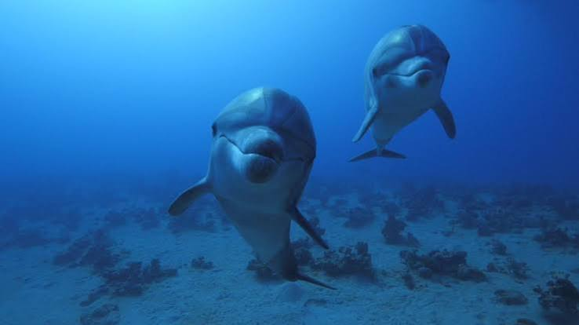
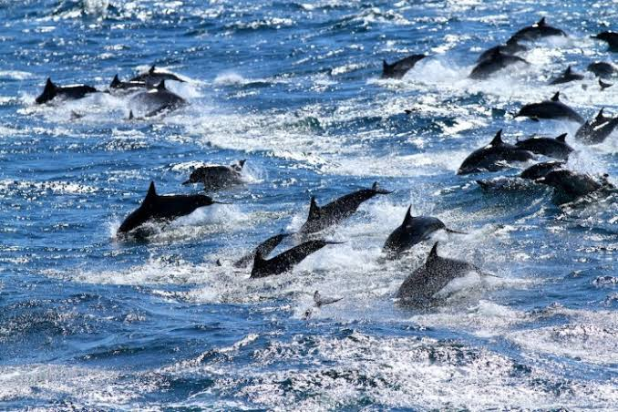

Bu web sitesi, Yunus (Delphinidae) hakkında gizemli ve büyüleyici dünyasına adım atmak isteyenler için hazırlanmış çok basit ve anlaşılır bir kaynaktır.
Yunuslar, balinalar ve musurlar ile aynı familyadan gelen, dünyanın en zeki deniz memelileridir. Karadan suya geçiş yapan evrimsel süreçleri sayesinde mükemmel birer yüzücüye dönüşmüşlerdir.
Karadan farklı olarak akciğerleriyle solunum yaparlar; bu nedenle belirli aralıklarla su yüzeyine çıkıp tepelerindeki hava deliğinden (püskürteç) nefes almaları gerekir.
Yunus için temsilî örnek görsel:

Okyanusların sığ ve ılık bölgelerinden nehir ağızlarına kadar geniş bir alanda yaşarlar. Sürü adı verilen (pod) ve sayıları 10 ila onlarca bireyden oluşan karmaşık sosyal gruplar halinde hareket ederler.

Balık, kalamar ve kabuklularla beslenirler. "Ekolokasyon" (yankı ile konum belirleme) yeteneklerini kullanarak karanlık veya bulanık sularda bile avlarının yerini milimetrik olarak tespit ederler.
Birlikte avlanırken balık sürülerini çember içine alarak organize stratejiler uygularlar ve avlarını bu şekilde kolayca yakalarlar.